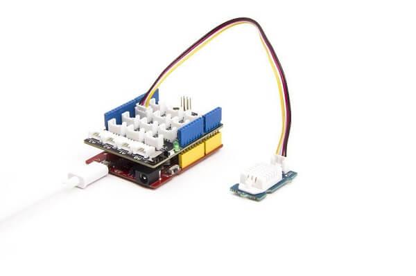
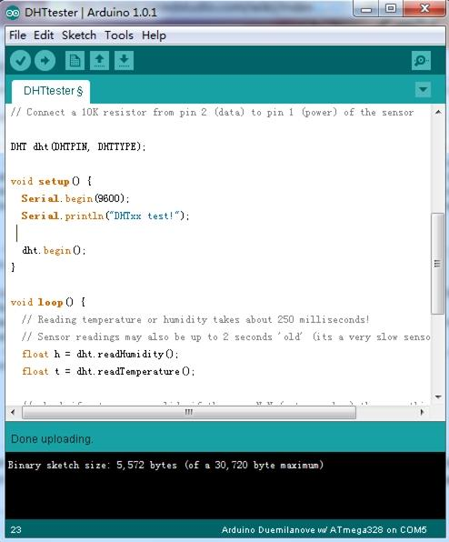
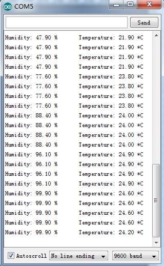
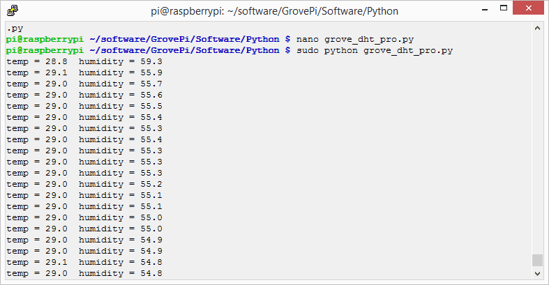

Go pro in temperature and relative humidity measurement applications with this Grove gadget. This is a powerful sister version of our Grove - Temperature and Humidity Sensor. It has more complete and accurate performance than the basic version. The detecting range of this sensor is 5% RH - 99% RH, and -40°C - 80°C. And its accuracy satisfyingly reaches up to 2% RH and 0.5°C. A professional choice for applications that have relatively strict requirements.

| Item | Parameter | Min | Norm | Max | Unit |
|---|---|---|---|---|---|
| VCC | - | 3.3 | - | 6 | V |
| Measuring Current Supply | - | 1 | - | 1.5 | mA |
| Standby Current Supply | - | 40 | - | 50 | uA |
| Measuring range | Humidity | 5% | - | 99% | RH |
| Temperature | -40 | - | 80 | °C | |
| Accuracy | Humidity | - | - | ±2% | RH |
| Temperature | - | - | ±0.5 | °C | |
| Resolution | Humidity | - | - | 0.1% | RH |
| Temperature | - | - | 0.1 | °C | |
| Repeatability | Humidity | - | - | ±0.3% | RH |
| Temperature | - | - | ±0.2 | °C | |
| Long-term Stability | - | - | - | ±0.5% | RH/year |
| Signal Collecting Period | - | - | 2 | - | S |
| Respond Time | 1/e(63%) | 6 | - | 20 | S |
Following documents help in getting the user started with Grove.
1. Connect the Temperature and Humidity Sensor Pro to D2 of Grove - Base Shield. Then plug Grove - Base Shield into Arduino and connect Arduino to PC using a USB cable.

2. Download Seeed DHT library for arduino boards with 16MHz XTAL; Unzip and put it in the libraries file of Arduino IDE by the path: ..\arduino-1.0\libraries; Another library - DHTlib is also available instead of Seeed DHT library. This library supports both 16MHz and 8MHz Arduino (eg. Seeeduino Stalker)
3. Restart the Arduino IDE. Open “ DHTtester” example via the path: File --> Examples --> Humidity_Temperature_Sensor --> DHTtester. Through this demo, we can read the temperature and relative humidity information of the environment.

Note:
This Grove - Temperature and Humidity Sensor Pro and our another product Grove-Temperature and Humidity Sensor are sharing this library. No matter which product you are using, make sure that you have made the definition line of the sensor of your board into effect and commented out the definition lines of other specs. For example, the sensor we used on Grove - Temperature and Humidity Sensor Pro is DHT 22. So the definition part of the sensor spec should be:
#define DHTTYPE DHT11 // DHT 11 #define DHTTYPE DHT22 // DHT 22 (AM2302) //#define DHTTYPE DHT21 // DHT 21 (AM2301)or
4. Upload it into your Arduino board.

1.You should have got a raspberry pi and a grovepi or grovepi+.
2.You should have completed configuring the development enviroment, otherwise follow here.
3.Connection
4.Navigate to the demos' directory:
cd yourpath/GrovePi/Software/Python/
nano grove_dht_pro.py # "Ctrl+x" to exit #
import grovepi # Connect the Grove Temperature & Humidity Sensor Pro to digital port D4 # SIG,NC,VCC,GND sensor = 4 while True: try: [temp,humidity] = grovepi.dht(sensor,1) print "temp =", temp, " humidity =", humidity except IOError: print "Error"
5.Run the demo.
sudo python grove_dht_pro.py
6.Result
